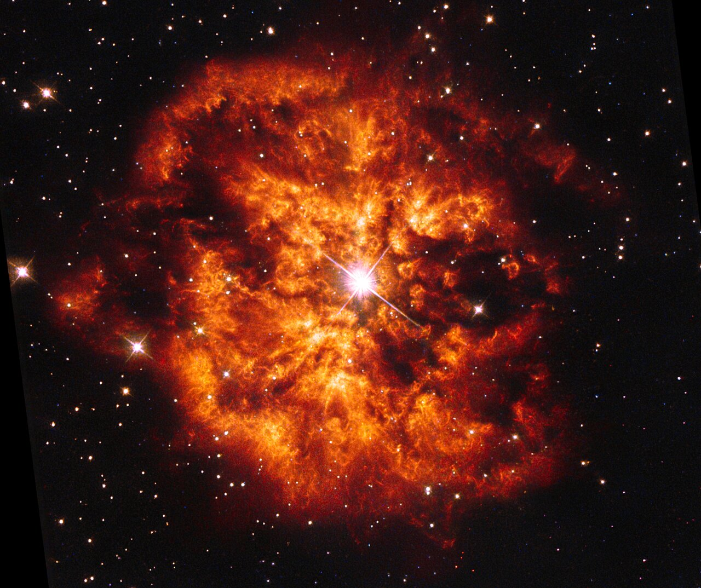
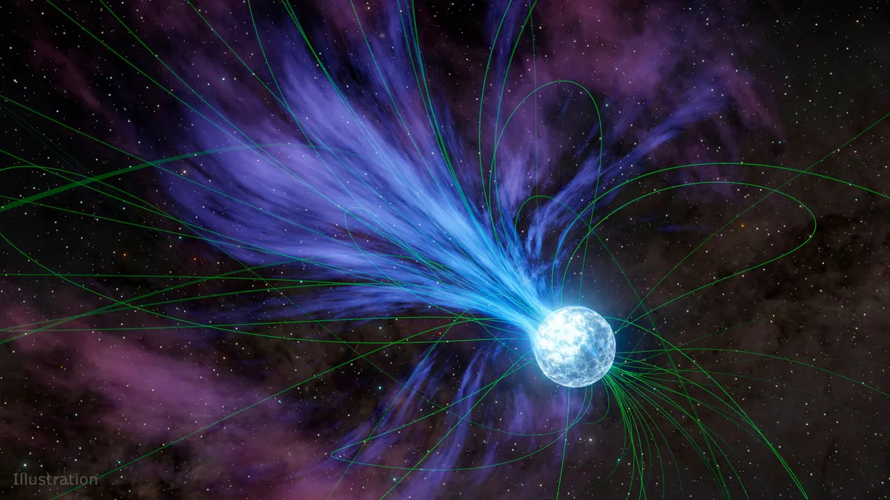
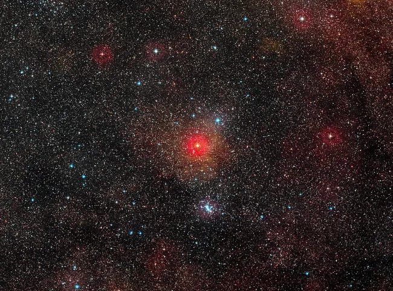
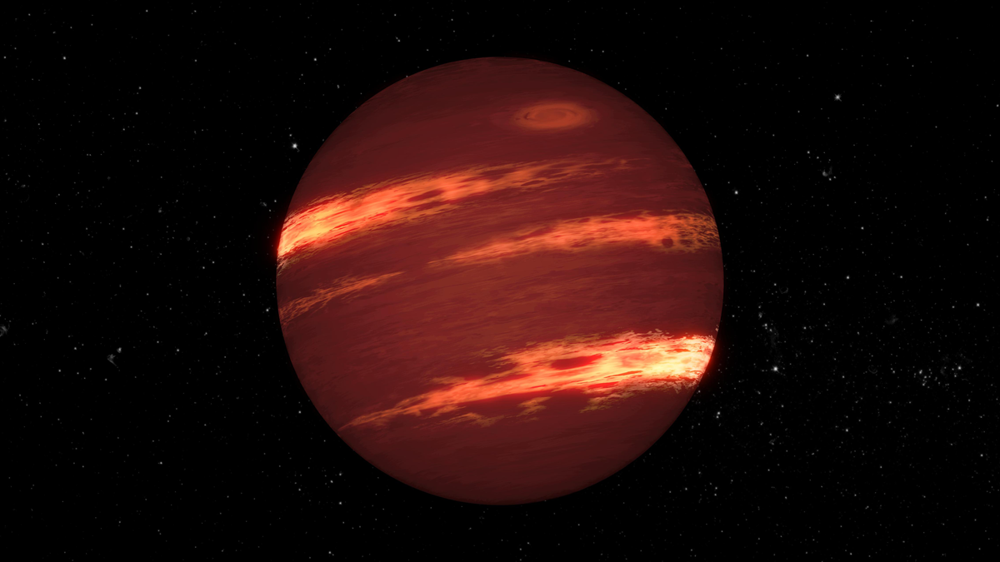

IMAGE: Wolf-Rayet 124 | IMAGE CREDIT: ESA/Hubble and NASA
IMAGE: A Magnetar | IMAGE CREDIT: NASA/JPL-Caltech
IMAGE: A Yellow Hypergiant | IMAGE CREDIT: ESO/Digitized Sky Survey 2
IMAGE: A Illustration of a Brown Dwarf | IMAGE CREDIT: NASA-JPL, Caltech
IMAGE: Wolf-Rayet 124 | IMAGE CREDIT: ESA/Hubble and NASA
Wolf-Rayet StarA giant star that is stripped bare, leaving behind a core and cloud of gas.
MAGE: A Magnetar | IMAGE CREDIT: NASA/JPL-Caltech
MagnetarA neutron star with the strongest magnetic field to ever exist.
IMAGE: A Yellow Hypergiant | IMAGE CREDIT: ESO/Digitized Sky Survey 2
Yellow HypergiantOne of the rarest stars to exist, the yellow hypergiant is very unstable compared to its counterparts.
IMAGE: A Illustration of a Brown Dwarf | IMAGE CREDIT: NASA-JPL, Caltech
Brown DwarfThe in-between of a planet and a star. Brown dwarfs are essnetially formed like stars, but lack the necessary mass in order to act like one. As such, these stars behave more like a planet.